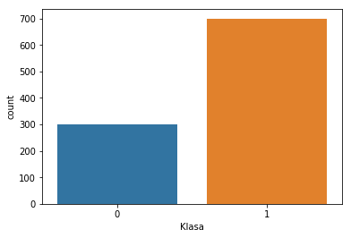
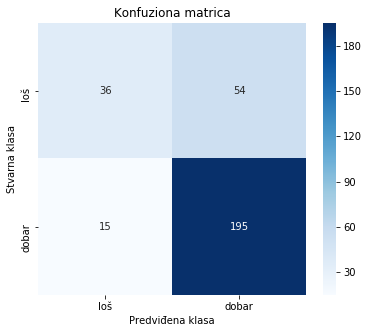

Ansambl metode
Ansambl metode zasnivaju se na ideji da se, umesto jednog modela, koristi više pojedinačnih modela koji su objedinjeni u jedinstven ansambl. Kombinovanjem većeg broja pouzdanih modela smanjuje se uticaj grešaka i postižu se veća tačnost i stabilnost, jer se njihovim zajedničkim delovanjem poništavaju nezavisne ili slabo povezane greške.
Ishodi učenja: Nakon savladavanja ovog poglavlja, student će biti u stanju da:
objasni osnovnu ideju ansambl metoda i razliku u odnosu na pojedinačne modele
razlikuje ključne pristupe kao što su bagging, boosting i random forest
primeni ansambl metode u tipičnim ekonomskim problemima klasifikacije i regresije
interpretira rezultate modela i proceni njihov doprinos poboljšanju tačnosti predikcije
Uvod
Ansambl metode predstavljaju tehnike mašinskog učenja koje kombinuju više modela kako bi se dobile preciznije i stabilnije predikcije. Ideja je jednostavna: umesto da se oslonimo na jedan model, koristimo više njih i objedinjavamo njihove rezultate. U praksi, ovakav pristup smanjuje greške i daje pouzdanija predviđanja na novim podacima.
Ideja ansambl učenja
Kombinovanjem više nesavršenih procena često se dobija bolji rezultat nego korišćenjem samo jedne.
Najvažniji pristupi zasnivaju se na dve strategije:
Uzorkovanje sa ponavljanjem (bagging)
Više modela se trenira nezavisno, svaki na različitom nasumičnom uzorku podataka. Konačna odluka dobija se njihovim objedinjavanjem (npr. glasanjem ili prosekom). Ovaj pristup smanjuje osetljivost na slučajne greške i čini model stabilnijim. Najpoznatiji primer su nasumične šume (random forest), koje kombinuju više stabala odlučivanja.Pojačavanje (boosting)
Modeli se treniraju redom, tako da svaki naredni pokušava da ispravi greške prethodnog. Veća pažnja se posvećuje problematičnim primerima, pa se model postepeno poboljšava. Ovaj pristup često daje vrlo precizne rezultate. Primeri su: adaptivno pojačavanje (AdaBoost), gradijentno pojačavanje (gradient boosting), XGBoost, LightGBM i CatBoost.
Intuitivni primer (glasanje eksperata)
Zamislimo da više ekonomskih analitičara daje procenu da li će određena kompanija ostvariti rast profita.
Svaki analitičar donosi svoju odluku na osnovu dostupnih podataka
Pojedinačne procene mogu biti pogrešne
Konačna odluka donosi se glasanjem većine
Ako većina analitičara smatra da će profit rasti, donosi se takva odluka. Ovo je analogija za bagging: više nezavisnih modela daje predikciju, a rezultat se dobija njihovim objedinjavanjem.
Sada zamislimo drugačiji pristup:
prvi analitičar daje procenu
drugi analitičar posebno obraća pažnju na greške prvog
treći analitičar pokušava da ispravi greške prethodna dva
Na kraju, svi analitičari zajedno donose konačnu odluku, ali veći uticaj imaju oni koji su bili uspešniji. Ovo odgovara ideji boosting-a: modeli se treniraju redom i svaki naredni pokušava da popravi prethodne.
Varijansa i pristrasnost
Važan izazov u mašinskom učenju je ravnoteža između pristrasnosti (bias) i varijanse (variance). Jednostavni modeli mogu biti previše grubi (underfitting), dok složeni modeli mogu previše da se prilagode podacima (overfitting). Ansambl metode pomažu da se postigne bolji balans između ova dva problema.
Osnovna razlika između pristupa može se sažeti ovako:
bagging smanjuje varijansu kombinovanjem više nezavisnih modela
boosting smanjuje pristrasnost tako što uči iz grešaka prethodnih modela
Ansambl metode zahtevaju više računarskih resursa, ali u praksi često daju značajno bolje rezultate od pojedinačnih modela, zbog čega imaju široku primenu u ekonomiji i poslovnoj analizi.
Karakteristika |
Bagging |
Boosting |
|---|---|---|
Kako uči |
Više nezavisnih modela |
Modeli se uče jedan za drugim |
Cilj |
Smanjenje varijanse |
Smanjenje pristrasnosti |
Rad sa greškama |
Svi podaci imaju isti značaj |
Fokus na pogrešno klasifikovane |
Prenaučenost |
Manje izražena |
Može se javiti |
Treniranje |
Paralelno |
Sekvencijalno |
Osetljivost na šum |
Manja |
Veća |
Kako funkcionišu ansambl metode
Ansambl metode kombinuju više modela kako bi dobile bolji rezultat. Iako postoje različiti pristupi, osnovne ideje su sledeće:
više modela umesto jednog
umesto jednog modela, koristi se veći broj modela koji zajedno donose odlukurazličiti podaci ili pristupi
modeli se mogu trenirati na različitim uzorcima podataka ili sa različitim podešavanjimaučenje iz grešaka
kod nekih metoda (npr. boosting) novi modeli pokušavaju da isprave greške prethodnihkombinovanje rezultata
kod klasifikacije koristi se glasanje
kod regresije koristi se prosek
U praksi, sve ove ideje su već implementirane u bibliotekama kao što je scikit-learn, tako da korisnik najčešće podešava parametre, dok se sama logika ansambla izvršava automatski.
Prednosti i ograničenja ansambl metoda
Ansambl metode donose niz značajnih koristi u analizi podataka i izgradnji prediktivnih modela:
Veća tačnost predviđanja. Kombinovanjem više modela postiže se bolja preciznost nego kod pojedinačnih modela.
Bolja generalizacija. Ansambli se uspešnije prilagođavaju novim podacima jer smanjuju i pristrasnost (bias) i varijansu (variance).
Ravnoteža između pristrasnosti i varijanse. Različiti pristupi omogućavaju balans: bagging uglavnom smanjuje varijansu, dok boosting smanjuje pristrasnost.
Manje preprilagođavanje (overfitting). Kombinovanje više modela smanjuje verovatnoću da model „zapamti” slučajne obrasce iz podataka.
Otpornost na šum i ekstremne vrednosti. Uticaj netačnih podataka se ublažava jer konačna odluka zavisi od više modela.
Fleksibilnost primene. Ansambl pristup se može primeniti na različite algoritme i probleme u ekonomiji i poslovnoj analizi.
Uprkos ovim prednostima, postoje i određena ograničenja:
Veća računarska zahtevnost. Treniranje više modela zahteva više vremena i resursa.
Ograničenja bagging-a. Ne donosi značajno poboljšanje kada su osnovni modeli već stabilni i dobro generalizuju.
Ograničenja boosting-a.
Može dovesti do preprilagođavanja (overfitting) ako model postane previše složen.
Osetljiv je na šum i ekstremne vrednosti jer pokušava da ispravi i greške koje potiču iz loših podataka.
Slučajne šume
Nasumične šume (random forest) su metoda koja kombinuje veliki broj stabala odlučivanja kako bi se dobila preciznija i stabilnija predikcija.
Osnovna ideja zasniva se na dva jednostavna koraka:
različiti uzorci podataka (bootstrap)
Svako stablo se trenira na malo drugačijem skupu podataka koji se dobija nasumičnim uzorkovanjem sa ponavljanjem.
Na taj način svako stablo „vidi” drugačije podatke.slučajan izbor atributa
Prilikom svakog grananja, stablo ne razmatra sve promenljive, već samo nasumično izabrani podskup.
Ovo dodatno povećava razlike između stabala.
Zahvaljujući ova dva koraka, stabla u modelu nisu ista, već donose različite odluke. Kombinovanjem njihovih rezultata dobija se stabilniji i precizniji model.
Konačna predikcija:
kod klasifikacije se koristi glasanje — klasa koju predloži većina stabala
kod regresija se koristi prosek — srednja vrednost svih predikcija
Proces treniranja može se razumeti kroz nekoliko jednostavnih koraka:
pravi se više različitih uzoraka podataka
svaki model se trenira na nasumično izabranom uzorku (sa ponavljanjem)trenira se više stabala odlučivanja
svako stablo uči na svom skupu podatakauvodi se dodatna slučajnost
pri svakom grananju koristi se samo deo dostupnih promenljivihkombinuju se rezultati svih stabala
Šta je važno u praksi?
U praksi, sve ove korake automatski izvršava biblioteka scikit-learn, a korisnik podešava nekoliko važnih parametara modela:
n_estimators- broj stabala u modelumax_features- broj promenljivih koje se razmatraju pri svakom grananjumax_depth- maksimalna dubina stabla, manja vrednost smanjuje preprilagođavanjemin_samples_split- minimalan broj uzoraka potreban da bi se izvršilo grananjemin_samples_leaf- minimalan broj uzoraka u završnom čvoru (listu)bootstrap- da li se koristi uzorkovanje sa ponavljanjem (običnoTrue)random_state- obezbeđuje ponovljivost rezultata
Najčešće je dovoljno podesiti broj stabala i dubinu stabla, dok ostali parametri mogu ostati na podrazumevanim vrednostima.
Veći broj stabala obično daje bolje rezultate, ali povećava vreme izračunavanja.
Prednosti i mane nasumičnih šuma (random forest)
Nasumične šume su veoma popularan model jer daju dobre rezultate u praksi, ali imaju i određena ograničenja.
Prednosti:
Smanjen rizik od preprilagođavanja (overfitting). Kombinovanjem više stabala model je stabilniji od pojedinačnog stabla.
Visoka tačnost i robusnost. Model dobro radi i za klasifikaciju i za regresiju, čak i kada podaci nisu savršeni.
Procena značaja promenljivih. Moguće je videti koje promenljive najviše utiču na rezultat (feature importance).
Mane:
Veća računarska zahtevnost. Treniranje većeg broja stabala zahteva više vremena.
Veća potrošnja resursa. Model može zauzimati više memorije.
Slabija interpretacija. Za razliku od jednog stabla, model je teže objasniti jer se sastoji od mnogo stabala (tzv. black-box)
Konfiguracija i obuka algoritma slučajne šume u scikit-learn okruženju
Za ilustraciju rada slučajne šume koristićemo isti skup podataka kao i kod stabla odlučivanja German Credit Dataset (detalje o bazi možete pronaći ovde). Ova baza je posebno pogodna jer kombinuje numeričke i kategoričke podatke koji direktno utiču na donošenje odluka.
Podsetimo se ključnih detalja o bazi:
Kontekst: Skup sadrži podatke o 1.000 klijenata banke.
Struktura: Svaki klijent je opisan kroz 20 numeričkih i kategoričkih atributa.
Cilj: Binarna klasifikacija klijenata na grupe niskog ili visokog kreditnog rizika.
Ova baza je idealna za prelazak sa pojedinačnog stabla na slučajnu šumu, jer nam omogućava da direktno uporedimo kako ansambl modela obrađuje iste numeričke i kategoričke podatke radi preciznije procene kreditne sposobnosti.
Priprema radnog okruženja i uvoz biblioteka
Svaka od navedenih biblioteka ima precizno definisanu ulogu u procesu mašinskog učenja, kao i u našem algoritmu za izgradnju slučajnih šuma. Iako smo mnoge od njih koristili i za pojedinačno stablo odlučivanja, ovde one omogućavaju rad sa ansamblom modela, što značajno doprinosi stabilnosti i tačnosti predviđanja.
Manipulacija i vizuelizacija podataka
Pandas (
pd): primarna biblioteka za rad sa tabelarnim podacima. Koristi se za učitavanje podataka, njihovo čišćenje i manipulaciju tabelama.Matplotlib (
plt): osnovna biblioteka za kreiranje grafikona i vizuelni prikaz rezultata.Seaborn (
sns): biblioteka za naprednu vizuelizaciju podataka zasnovana na Matplotlib-u.
Biblioteka Scikit-learn (sklearn)
Ova biblioteka omogućava jednostavnu implementaciju algoritama, pripremu podataka, obuku modela i evaluaciju performansi. U ovom kodu koristimo:
priprema podataka
train_test_split: podela podataka na trening i test skupOneHotEncoder: pretvara kategoričke podatke u numerički formatColumnTransformer: omogućava različitu obradu različitih kolonaPipeline: povezuje sve korake u jedan proces
algoritam
RandomForestClassifier: implementacija modela nasumičnih šuma
evaluacija modela
accuracy_score: meri ukupnu tačnost modelaclassification_report: daje detaljan pregled performansi modela
import numpy as np
import pandas as pd
import matplotlib.pyplot as plt
import seaborn as sns
from sklearn.model_selection import train_test_split
from sklearn.preprocessing import OneHotEncoder
from sklearn.compose import ColumnTransformer
from sklearn.pipeline import Pipeline
from sklearn.ensemble import RandomForestClassifier
from sklearn.metrics import accuracy_score, classification_report
Učitavanje skupa podataka
U ovom koraku definišemo internet adresu (engl. URL) koja vodi do German Credit skupa podataka. Ovaj dataset je deo čuvenog UCI Machine Learning Repository arhiva.
VebAdresa = "https://archive.ics.uci.edu/ml/machine-learning-databases/statlog/german/german.data"
Definisanje imena kolona
Radi bolje čitljivost koda, u ovoj fazi manuelno dodeljujemo deskriptivna imena svakom atributu.
columns = [
"Status_racuna", "Trajanje_kredita", "Kreditna_istorija", "Svrha",
"Iznos_kredita", "Stednja", "Radni_staz", "Stopa_rata",
"Licni_status", "Drugi_duznici", "Vreme_stanovanja",
"Imovina", "Starost", "Drugi_krediti",
"Stanovanje", "Broj_kredita",
"Zaposlenost", "Broj_izdrzavanih", "Telefon", "Strani_radnik",
"Klasa"
]
Učitavamo skup podataka u Pandas DataFrame, pri čemu koristimo sep=" " da označimo da su vrednosti odvojene razmakom. Postavljanjem parametra header=Noneoznačavamo da dataset ne sadrži red sa imenima kolona, dok postavljanjem parametra names=columns dodeljujemo nazive kolona onako kako su u prethodnom redu definisani i smešteni u niz columns.
Ako se u zagradama ne navede broj, metoda baza.head() podrazumevano prikazuje prvih 5 redova skupa podataka.
Ukoliko se u zagradama navede broj, prikazuju se prvih onoliko redova koliko je zadato. Analogno tome, metoda baza.tail() prikazuje poslednjih 5 redova ako broj nije preciziran, odnosno poslednjih onoliko redova koliko je navedeno u zagradama.
baza = pd.read_csv(VebAdresa, sep=" ", header=None, names=columns)
baza.head()
| Status_racuna | Trajanje_kredita | Kreditna_istorija | Svrha | Iznos_kredita | Stednja | Radni_staz | Stopa_rata | Licni_status | Drugi_duznici | ... | Imovina | Starost | Drugi_krediti | Stanovanje | Broj_kredita | Zaposlenost | Broj_izdrzavanih | Telefon | Strani_radnik | Klasa | |
|---|---|---|---|---|---|---|---|---|---|---|---|---|---|---|---|---|---|---|---|---|---|
| 0 | A11 | 6 | A34 | A43 | 1169 | A65 | A75 | 4 | A93 | A101 | ... | A121 | 67 | A143 | A152 | 2 | A173 | 1 | A192 | A201 | 1 |
| 1 | A12 | 48 | A32 | A43 | 5951 | A61 | A73 | 2 | A92 | A101 | ... | A121 | 22 | A143 | A152 | 1 | A173 | 1 | A191 | A201 | 2 |
| 2 | A14 | 12 | A34 | A46 | 2096 | A61 | A74 | 2 | A93 | A101 | ... | A121 | 49 | A143 | A152 | 1 | A172 | 2 | A191 | A201 | 1 |
| 3 | A11 | 42 | A32 | A42 | 7882 | A61 | A74 | 2 | A93 | A103 | ... | A122 | 45 | A143 | A153 | 1 | A173 | 2 | A191 | A201 | 1 |
| 4 | A11 | 24 | A33 | A40 | 4870 | A61 | A73 | 3 | A93 | A101 | ... | A124 | 53 | A143 | A153 | 2 | A173 | 2 | A191 | A201 | 2 |
5 rows × 21 columns
Kada pozovemo baza.describe() dobijamo statistički sažetak numeričkih kolona skupa podataka.
baza.describe()
| Trajanje_kredita | Iznos_kredita | Stopa_rata | Vreme_stanovanja | Starost | Broj_kredita | Broj_izdrzavanih | Klasa | |
|---|---|---|---|---|---|---|---|---|
| count | 1000.000000 | 1000.000000 | 1000.000000 | 1000.000000 | 1000.000000 | 1000.000000 | 1000.000000 | 1000.000000 |
| mean | 20.903000 | 3271.258000 | 2.973000 | 2.845000 | 35.546000 | 1.407000 | 1.155000 | 1.300000 |
| std | 12.058814 | 2822.736876 | 1.118715 | 1.103718 | 11.375469 | 0.577654 | 0.362086 | 0.458487 |
| min | 4.000000 | 250.000000 | 1.000000 | 1.000000 | 19.000000 | 1.000000 | 1.000000 | 1.000000 |
| 25% | 12.000000 | 1365.500000 | 2.000000 | 2.000000 | 27.000000 | 1.000000 | 1.000000 | 1.000000 |
| 50% | 18.000000 | 2319.500000 | 3.000000 | 3.000000 | 33.000000 | 1.000000 | 1.000000 | 1.000000 |
| 75% | 24.000000 | 3972.250000 | 4.000000 | 4.000000 | 42.000000 | 2.000000 | 1.000000 | 2.000000 |
| max | 72.000000 | 18424.000000 | 4.000000 | 4.000000 | 75.000000 | 4.000000 | 2.000000 | 2.000000 |
Napomena
Standardna metoda describe() analizira isključivo numeričke kolone. Kako biste dobili uvid i u kategoričke podatke, koristite argument include='all', što dodatno vraća:
unique– broj jedinstvenih vrednosti u kolonitop– najčešća vrednost (modus)freq– frekfencija ponavljanja najčešće vrednosti
Pozivanje metode.info() dobijamo izveštaj o strukturi posmatranog skupa podataka, uključujući tip objekta, opsega indeksa, broj redova, listu kolona, broj popunjenih vrednosti za svaki atribut , tip podataka svake kolone, količinu memorije koju zauzima skup podataka.
Napomena
Metod .info() je koristan za brzu proveru nedostajućih vrednosti i tipova podataka u skupu podataka.
baza.info()
<class 'pandas.core.frame.DataFrame'>
RangeIndex: 1000 entries, 0 to 999
Data columns (total 21 columns):
Status_racuna 1000 non-null object
Trajanje_kredita 1000 non-null int64
Kreditna_istorija 1000 non-null object
Svrha 1000 non-null object
Iznos_kredita 1000 non-null int64
Stednja 1000 non-null object
Radni_staz 1000 non-null object
Stopa_rata 1000 non-null int64
Licni_status 1000 non-null object
Drugi_duznici 1000 non-null object
Vreme_stanovanja 1000 non-null int64
Imovina 1000 non-null object
Starost 1000 non-null int64
Drugi_krediti 1000 non-null object
Stanovanje 1000 non-null object
Broj_kredita 1000 non-null int64
Zaposlenost 1000 non-null object
Broj_izdrzavanih 1000 non-null int64
Telefon 1000 non-null object
Strani_radnik 1000 non-null object
Klasa 1000 non-null int64
dtypes: int64(8), object(13)
memory usage: 164.1+ KB
Binarizacija ciljne klase; Razdvajanje podataka na ulazne atribute i izlazne labele
Binarizacija ciljne klase: U posmatranoj bazi ciljna promenljiva uzima vrednosti
1(dobar kreditni rizik) i2(loš kreditni rizik). Koristeci metodu.map()izvršićemo prekodiranje ovih vrednosti1u1(dobar klijent), i2u1(rizičan klijent) radi usklađivanja sa standardima binarne klasifikacije.Razdvajanje na ulazne atribute i izlazne labele:
Matrica atributa (
X): Izdvajanjem kolone „"Klasa"iz skupa podataka formiramo matricu atributa (nezavisnih promenljivih). Ovi podaci predstavljaju ulazne parametre (\(X\)) na osnovu kojih model uči da prepoznaje obrasce i donosi predviđanja.Izlazna labela (
y): Kolona"Klasa"se izdvaja kao zavisna promenljiva, odnosno ciljni vektor (\(y\)), čija se vrednost predviđa na osnovu ulaznih podataka. U kontekstu mašinskog učenja, ovaj vektor predstavlja „labelu” ili tačan odgovor na osnovu kojeg model uči da prepoznaje obrasce i vrši klasifikaciju novih primera.
# Transformacija izlazne labele u binarni oblik
baza["Klasa"] = baza["Klasa"].map({1: 1, 2: 0})
X = baza.drop("Klasa", axis=1)
y = baza["Klasa"]
# One-Hot Encoding kategorijskih promenljivih
X_encoded = pd.get_dummies(X, drop_first=True)
X_train, X_test, y_train, y_test = train_test_split(
X_encoded, y,
test_size=0.3,
random_state=42,
stratify=y
)
Pre obučavanja modela, važno je analizirati distribuciju ciljne promenljive (Klasa). Za ovu svrhu koristimo funkciju countplot() iz biblioteke Seaborn, koja na vizuelno jasan način prikazuje brojnost svake kategorije.
# Draw a Histogram
sns.countplot(data=baza, x="Klasa")
<matplotlib.axes._subplots.AxesSubplot at 0x214267a7828>

Analiza uravnoteženosti klasa
Nakon vizuelnog prikaza, koristimo numeričke funkcije kako bismo precizno izračunali odnos između klasa:
np.unique(): Identifikuje sve jedinstvene oznake koje postoje u koloniKlasa(u ovom primeru nule i jedinice).np.bincount(): Prebrojava koliko se puta svaka od tih oznaka pojavljuje u skupu podataka.Stepen neuravnoteženosti klasa (engl. Imbalance ratio): Odnos dobijenih vrednosti pokazuje kolika je relativna zastupljenost jedne klase u odnosu na drugu
print("Jedinstvene oznake: ", np.unique(baza["Klasa"]))
class_dist = np.bincount(baza["Klasa"])
print("Broj instanci u svakoj klasi:", class_dist)
print("Stepen neuravnoteženosti klasa:", class_dist/np.min(class_dist))
Jedinstvene oznake: [0 1]
Broj instanci u svakoj klasi: [300 700]
Stepen neuravnoteženosti klasa: [1. 2.33333333]
Skup podataka za predviđanje kreditnog rizika pokazuje određeni stepen neuravnoteženosti. Izračunati odnos zastupljenosti klasa (1 : 2,33) pokazuje da je jedna klasa oko 2,3 puta brojnija od druge.
Podela na trening i test skup
Pomoću funkcije train_test_split, ceo skup podataka se deli na test skup i trening skup.
Objašnjenje parametara i rezultata:
train_test_split– funkcija koja nasumično deli ulazne podatke na trening i test podskup, čime omogućava objektivnu procenu performansi modela.X_train, X_test, y_train, y_test– funkcija vraća četiri podskupa kako bi se razdvojio proces učenja od procesa evaluacije.X_trainiy_trainčine trening skup na kojem model „uči“ obrasce iz podataka, gde je X_train skup nezavisnih promenljivih, a y_train skup zavisnih promenljivih (stvarne ciljne vrednosti ko je kupio proizvod) koji odgovaraju ’X_train’ skupu.X_testiy_testkoriste se za proveru koliko je model precizan na podacima koje ranije nije video, gde je X_test skup nezavisnih promenljivih na osnovu ovih podataka model vrši predviđanja, a y_test skup zavisnih promenljivih (stvarni ishodi za testni skup.).
test_size– definiše koliki će procenat ukupnog skupa podataka biti izdvojen za testiranje modela, biramotest_size = 0.3kako bi se 30% podataka alociralo za testiranje performansi modela, dok se preostalih 70% koristi za proces treninga.random_state–Koristi se za postizanje reproduktivnosti rezultata. Postavljanje fiksne celobrojne vrednosti omogućava dobijanje identičnih ishoda pri svakom izvršavanju koda, čime se kontroliše slučajnost u procesu izgradnje modela.
X_train, X_test, y_train, y_test = train_test_split(X, y, test_size = 0.3, stratify = y, random_state = 149)
#prikazujemo veličinu trening i test skupa
print()
print("Trening skup: ", X_train.shape, y_train.shape)
print("Test skup: ", X_test.shape)
Trening skup: (700, 20) (700,)
Test skup: (300, 20)
Normalizacija neprekidnih atributa pomoću MinMaxScaler-a
Pošto se numeričke promenljive izražavaju u različitim jedinicama i opsezima, potrebno je izvršiti njihovu normalizaciju na interval od 0 do 1.
MinMaxScaler: Metoda koja transformiše vrednosti tako da najmanja vrednost u koloni postaje 0, a najveća 1.Postupak obrade:
fit: Na osnovu trening skupa određuju se minimalne i maksimalne vrednosti.transform: Naučena transformacija se zatim primenjuje i na trening i na test skup podataka.
Značaj normalizacije:
Ovim postupkom se sprečava da atributi sa velikim numeričkim vrednostima (npr. iznos kredita izražen u hiljadama) imaju veći uticaj od atributa sa manjim vrednostima (npr. trajanje kredita u mesecima) tokom obučavanja modela.
Na kraju, proverom minimalnih i maksimalnih vrednosti potvrđuje se da su svi podaci uspešno preslikani u željeni opseg \([0, 1]\).
from sklearn.preprocessing import MinMaxScaler
scaler = MinMaxScaler()
kontrolneKolone = ['Trajanje_kredita', 'Iznos_kredita', 'Starost']
scaler.fit(X_train[kontrolneKolone])
X_train[kontrolneKolone] = scaler.transform(X_train[kontrolneKolone])
X_test[kontrolneKolone] = scaler.transform(X_test[kontrolneKolone])
print("Minimum %0.2f i Maximum %0.2f na trening setu" %(np.min(X_train[kontrolneKolone].values), np.max(X_train[kontrolneKolone].values)))
C:\ProgramData\Anaconda3\lib\site-packages\sklearn\preprocessing\data.py:334: DataConversionWarning: Data with input dtype int64 were all converted to float64 by MinMaxScaler.
return self.partial_fit(X, y)
C:\ProgramData\Anaconda3\lib\site-packages\ipykernel_launcher.py:9: SettingWithCopyWarning:
A value is trying to be set on a copy of a slice from a DataFrame.
Try using .loc[row_indexer,col_indexer] = value instead
See the caveats in the documentation: http://pandas.pydata.org/pandas-docs/stable/indexing.html#indexing-view-versus-copy
if __name__ == '__main__':
C:\ProgramData\Anaconda3\lib\site-packages\pandas\core\indexing.py:543: SettingWithCopyWarning:
A value is trying to be set on a copy of a slice from a DataFrame.
Try using .loc[row_indexer,col_indexer] = value instead
See the caveats in the documentation: http://pandas.pydata.org/pandas-docs/stable/indexing.html#indexing-view-versus-copy
self.obj[item] = s
Minimum 0.00 i Maximum 1.00 na trening setu
C:\ProgramData\Anaconda3\lib\site-packages\ipykernel_launcher.py:10: SettingWithCopyWarning:
A value is trying to be set on a copy of a slice from a DataFrame.
Try using .loc[row_indexer,col_indexer] = value instead
See the caveats in the documentation: http://pandas.pydata.org/pandas-docs/stable/indexing.html#indexing-view-versus-copy
# Remove the CWD from sys.path while we load stuff.
C:\ProgramData\Anaconda3\lib\site-packages\pandas\core\indexing.py:543: SettingWithCopyWarning:
A value is trying to be set on a copy of a slice from a DataFrame.
Try using .loc[row_indexer,col_indexer] = value instead
See the caveats in the documentation: http://pandas.pydata.org/pandas-docs/stable/indexing.html#indexing-view-versus-copy
self.obj[item] = s
Enkodiranje kategorijskih podataka (One-Hot Encoding)
Naredni blok naredbi služi za pretvaranje kategorijskih kolona u numerički oblik pomoću One-Hot Encoding metode.
OneHotEncoder: Najpre se kreira objekat enkodera:
encoder = OneHotEncoder(handle_unknown='ignore')OneHotEncoder()pretvara svaku kategorijsku vrednost u posebnu binarnu kolonu (0 ili 1).handle_unknown='ignore'ovaj parametar omogućava stabilan rad modela tako što sprečava grešku u slučaju da se u test skupu pojavi kategorija koja nije bila prisutna u trening skupu, takve vrednosti se jednostavno ignorišu.
Zatim se definiše lista kategorijskih kolona koje treba enkodirati:
KontrolneKolone = ['Status_racuna', 'Kreditna_istorija', 'Svrha', 'Stednja', 'Licni_status', 'Drugi_duznici', 'Drugi_krediti', 'Stanovanje']
Ova lista sadrži nazive svih kolona sa tekstualnim (kategorijskim) vrednostima.
Proces transformacije:
Sledeći korak je učenje enkodera na trening podacima:fit()identifikuje sve kategorije u svakoj koloni.transform()pretvara ih u numeričke vektore.Važno je da se ovo radi samo na trening skupu, kako bi se izbeglo curenje informacija iz test podataka.
Rezultat:
Proverom dimenzija pomoću.shapemože se uočiti povećanje broja kolona, jer svaka pojedinačna kategorija dobija sopstvenu binarnu reprezentaciju.
encoder = OneHotEncoder(handle_unknown = 'ignore')
KontrolneKolone = ['Status_racuna', 'Kreditna_istorija', 'Svrha', 'Stednja', 'Licni_status',
'Drugi_duznici', 'Drugi_krediti', 'Stanovanje']
encoder.fit(X_train[KontrolneKolone])
X_train_encoded = encoder.transform(X_train[KontrolneKolone])
X_test_encoded = encoder.transform(X_test[KontrolneKolone])
X_train_encoded = pd.DataFrame(X_train_encoded.toarray())
X_test_encoded = pd.DataFrame(X_test_encoded.toarray())
X_train = X_train.drop(columns = KontrolneKolone)
X_test = X_test.drop(columns = KontrolneKolone)
X_train = np.concatenate((X_train.values, X_train_encoded.values), axis = 1)
X_test = np.concatenate((X_test.values, X_test_encoded.values), axis = 1)
print("Dimenzije podataka za obučavanje:", X_train.shape)
print("Dimenzije podataka za testiranje:", X_test.shape)
Dimenzije podataka za obučavanje: (700, 49)
Dimenzije podataka za testiranje: (300, 49)
S obzirom na to da su u skupu podataka i dalje prisutne originalne (stare) kolone, ukupan broj kolona je povećan, a kategorijske promenljive još uvek nisu u potpunosti uklonjene. To možemo jasno uočiti pozivanjem funkcije head(), koja prikazuje prvih pet redova tabele i omogućava proveru da li se kategorijske kolone i dalje nalaze u podacima.
pd.DataFrame(X_train).head()
| 0 | 1 | 2 | 3 | 4 | 5 | 6 | 7 | 8 | 9 | ... | 39 | 40 | 41 | 42 | 43 | 44 | 45 | 46 | 47 | 48 | |
|---|---|---|---|---|---|---|---|---|---|---|---|---|---|---|---|---|---|---|---|---|---|
| 0 | 0.0357143 | 0.034561 | A73 | 1 | 2 | A121 | 0.125 | 1 | A172 | 2 | ... | 0 | 0 | 0 | 1 | 0 | 1 | 0 | 0 | 1 | 0 |
| 1 | 0.357143 | 0.167618 | A75 | 3 | 4 | A122 | 0.607143 | 1 | A173 | 1 | ... | 0 | 1 | 0 | 0 | 0 | 0 | 1 | 0 | 1 | 0 |
| 2 | 0.107143 | 0.0632214 | A73 | 2 | 2 | A123 | 0.321429 | 1 | A173 | 1 | ... | 0 | 1 | 0 | 0 | 0 | 0 | 1 | 0 | 1 | 0 |
| 3 | 0.464286 | 0.233887 | A73 | 4 | 4 | A122 | 0.375 | 1 | A174 | 1 | ... | 0 | 1 | 0 | 0 | 0 | 0 | 1 | 0 | 1 | 0 |
| 4 | 0.25 | 0.110232 | A74 | 4 | 1 | A123 | 0.267857 | 2 | A173 | 1 | ... | 0 | 1 | 0 | 0 | 0 | 1 | 0 | 0 | 1 | 0 |
5 rows × 49 columns
Pozivanjem pd.DataFrame(X_train).info() dobijamo da su sve kolone tipa object zato što X_train više nije DataFrame, već je postao NumPy niz (ndarray), zato što je za spajanje kolona korišćena funkcija np.concatenate. Ova funkcija vraća NumPy niz i time se gubi struktura DataFrame-a, uključujući nazive kolona i indekse.
Da bi se zadržao tabelarni oblik podataka i očuvale informacije o kolonama, umesto np.concatenate treba koristiti funkciju pd.concat, koja omogućava spajanje podataka uz očuvanje DataFrame strukture.
pd.DataFrame(X_train).info()
<class 'pandas.core.frame.DataFrame'>
Int64Index: 700 entries, 55 to 961
Data columns (total 49 columns):
Trajanje_kredita 700 non-null float64
Iznos_kredita 700 non-null float64
Radni_staz 700 non-null object
Stopa_rata 700 non-null int64
Vreme_stanovanja 700 non-null int64
Imovina 700 non-null object
Starost 700 non-null float64
Broj_kredita 700 non-null int64
Zaposlenost 700 non-null object
Broj_izdrzavanih 700 non-null int64
Telefon 700 non-null object
Strani_radnik 700 non-null object
0 700 non-null float64
1 700 non-null float64
2 700 non-null float64
3 700 non-null float64
4 700 non-null float64
5 700 non-null float64
6 700 non-null float64
7 700 non-null float64
8 700 non-null float64
9 700 non-null float64
10 700 non-null float64
11 700 non-null float64
12 700 non-null float64
13 700 non-null float64
14 700 non-null float64
15 700 non-null float64
16 700 non-null float64
17 700 non-null float64
18 700 non-null float64
19 700 non-null float64
20 700 non-null float64
21 700 non-null float64
22 700 non-null float64
23 700 non-null float64
24 700 non-null float64
25 700 non-null float64
26 700 non-null float64
27 700 non-null float64
28 700 non-null float64
29 700 non-null float64
30 700 non-null float64
31 700 non-null float64
32 700 non-null float64
33 700 non-null float64
34 700 non-null float64
35 700 non-null float64
36 700 non-null float64
dtypes: float64(40), int64(4), object(5)
memory usage: 273.4+ KB
KontrolneKolone = ['Status_racuna', 'Kreditna_istorija', 'Svrha', 'Stednja', 'Licni_status',
'Drugi_duznici', 'Drugi_krediti', 'Stanovanje', 'Radni_staz', 'Imovina', 'Zaposlenost','Telefon','Strani_radnik']
from sklearn.preprocessing import OneHotEncoder
encoder = OneHotEncoder(handle_unknown='ignore')
encoder.fit(X_train[KontrolneKolone])
# Transformacija
X_train_encoded = encoder.transform(X_train[KontrolneKolone])
X_test_encoded = encoder.transform(X_test[KontrolneKolone])
# Pretvaranje u DataFrame
X_train_encoded = pd.DataFrame(
X_train_encoded.toarray(),
index=X_train.index
)
X_test_encoded = pd.DataFrame(
X_test_encoded.toarray(),
index=X_test.index
)
# Izbacivanje kategorijskih kolona
X_train = X_train.drop(columns=KontrolneKolone)
X_test = X_test.drop(columns=KontrolneKolone)
# Spajanje pomoću concat (NE numpy!)
X_train = pd.concat([X_train, X_train_encoded], axis=1)
X_test = pd.concat([X_test, X_test_encoded], axis=1)
print(type(X_train)) # proveravamo da li je pandas DataFrame
print(X_train.shape)
print(X_train.dtypes.unique())
<class 'pandas.core.frame.DataFrame'>
(700, 61)
[dtype('float64') dtype('int64')]
X_train.info()
<class 'pandas.core.frame.DataFrame'>
Int64Index: 700 entries, 55 to 961
Data columns (total 61 columns):
Trajanje_kredita 700 non-null float64
Iznos_kredita 700 non-null float64
Stopa_rata 700 non-null int64
Vreme_stanovanja 700 non-null int64
Starost 700 non-null float64
Broj_kredita 700 non-null int64
Broj_izdrzavanih 700 non-null int64
0 700 non-null float64
1 700 non-null float64
2 700 non-null float64
3 700 non-null float64
4 700 non-null float64
5 700 non-null float64
6 700 non-null float64
7 700 non-null float64
8 700 non-null float64
9 700 non-null float64
10 700 non-null float64
11 700 non-null float64
12 700 non-null float64
13 700 non-null float64
14 700 non-null float64
15 700 non-null float64
16 700 non-null float64
17 700 non-null float64
18 700 non-null float64
19 700 non-null float64
20 700 non-null float64
21 700 non-null float64
22 700 non-null float64
23 700 non-null float64
24 700 non-null float64
25 700 non-null float64
26 700 non-null float64
27 700 non-null float64
28 700 non-null float64
29 700 non-null float64
30 700 non-null float64
31 700 non-null float64
32 700 non-null float64
33 700 non-null float64
34 700 non-null float64
35 700 non-null float64
36 700 non-null float64
37 700 non-null float64
38 700 non-null float64
39 700 non-null float64
40 700 non-null float64
41 700 non-null float64
42 700 non-null float64
43 700 non-null float64
44 700 non-null float64
45 700 non-null float64
46 700 non-null float64
47 700 non-null float64
48 700 non-null float64
49 700 non-null float64
50 700 non-null float64
51 700 non-null float64
52 700 non-null float64
53 700 non-null float64
dtypes: float64(57), int64(4)
memory usage: 339.1 KB
from sklearn.ensemble import RandomForestClassifier
random_forest = RandomForestClassifier(n_estimators = 100, random_state = 1402)
random_forest.fit(X_train, y_train)
# accuracy: (tp + tn) / (p + n)
print("Training accuracy: ", random_forest.score(X_train, y_train))
print("Test accuracy: ", random_forest.score(X_test, y_test))
Training accuracy: 1.0
Test accuracy: 0.77
from sklearn.metrics import precision_score, recall_score, f1_score, confusion_matrix
import matplotlib.pyplot as plt
import seaborn as sns
import numpy as np
# Predikcija na test skupu
y_pred = random_forest.predict(X_test)
# -----------------------------
# Preciznost (Precision)
# -----------------------------
precision_los = precision_score(y_test, y_pred, pos_label=0)
precision_dobar = precision_score(y_test, y_pred, pos_label=1)
print("Preciznost za klasu klijente visokog rizika (lose klijente):", precision_los)
print("Preciznost za klasu klijente niskog rizika (dobre klijente):", precision_dobar)
# -----------------------------
# Odziv (Recall)
# -----------------------------
recall_los = recall_score(y_test, y_pred, pos_label=0)
recall_dobar = recall_score(y_test, y_pred, pos_label=1)
print("Odziv za klasu klijente visokog rizika (lose klijente):", recall_los)
print("Odziv za klasu klijente niskog rizika (dobre klijente):", recall_dobar)
# -----------------------------
# F1 Score
# -----------------------------
f1_los = f1_score(y_test, y_pred, pos_label=0)
f1_dobar = f1_score(y_test, y_pred, pos_label=1)
print("F1 score za klasu klijente visokog rizika (lose klijente):", f1_los)
print("F1 score za klasu klijente niskog rizika (dobre klijente):", f1_dobar)
# -----------------------------
# Konfuziona matrica
# -----------------------------
conf_mat = confusion_matrix(y_test, y_pred, labels=np.unique(y_train))
plt.figure(figsize=(6,5))
sns.heatmap(conf_mat, annot=True, fmt='d', cmap='Blues',
xticklabels=['loš', 'dobar'],
yticklabels=['loš', 'dobar'])
plt.ylabel('Stvarna klasa')
plt.xlabel('Predviđena klasa')
plt.title('Konfuziona matrica')
plt.show()
Preciznost za klasu klijente visokog rizika (lose klijente): 0.7058823529411765
Preciznost za klasu klijente niskog rizika (dobre klijente): 0.7831325301204819
Odziv za klasu klijente visokog rizika (lose klijente): 0.4
Odziv za klasu klijente niskog rizika (dobre klijente): 0.9285714285714286
F1 score za klasu klijente visokog rizika (lose klijente): 0.5106382978723405
F1 score za klasu klijente niskog rizika (dobre klijente): 0.8496732026143791

Rangiranje značaja atributa
Rangiranje značaja atributa u algoritmu slučajnih šuma može se sprovesti prema pristupu Breimana [1], a sama metodologija je i integrisana u standardnoj scikit-learn biblioteci.
Procedura evaluacije značaja atributa u skupu podataka \(D_n = \{(X_i, Y_i)\}_{i=1}^n\) sprovodi se kroz sledeće faze:
Obučavanje modela: Inicijalni korak podrazumeva fitovanje modela slučajnih šuma.
Evidencija greške: Za svaku instancu registruje se out-of-bag (OOB) greška.
Agregacija rezultata: Izračuna se prosečna vrednost dobijenih grešaka u okviru ansambla.
Merenje značaja \(j\)-tog obeležja (atributa) procenjuje se kroz sledeći postupak:
Permutacija vrednosti: Vrednosti posmatranog \(j\)-tog obeležja se nasumično permutuju unutar skupa podataka za obučavanje, čime se narušava njegova stvarna veza sa ciljnom promenljivom.
Rekalkulacija greške: Na ovako izmenjenom (perturbovanom) skupu podataka ponovo se izračunava out-of-bag (OOB) greška.
Izračunavanje vrednosti značaja (Importance Score): Mera značaja \(j\)-tog obeležja dobija se kao prosečna vrednost ovih razlika u OOB greškama pre i nakon permutacije, na nivou svih stabala u ansamblu.
Normalizacija: Radi obezbeđivanja uporedivosti, ovaj rezultat se normalizuje standardnom devijacijom uočenih razlika.
Suština: Što je veći porast greške nakon permutacije obeležja, to je taj atribut značajniji za prediktivnu moć modela.
Literatura
Leo Breiman. Random forests. Machine Learning, 45(1):5–32, 2001. doi:10.1023/A:1010933404324.